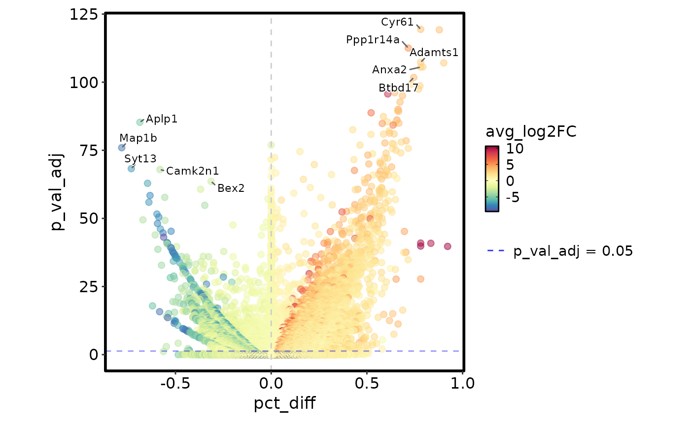
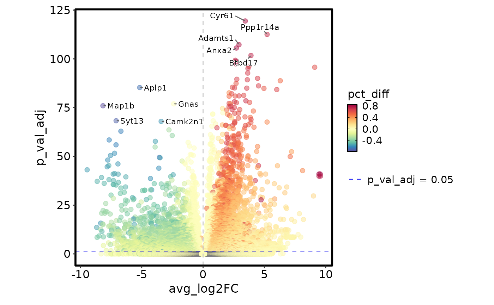
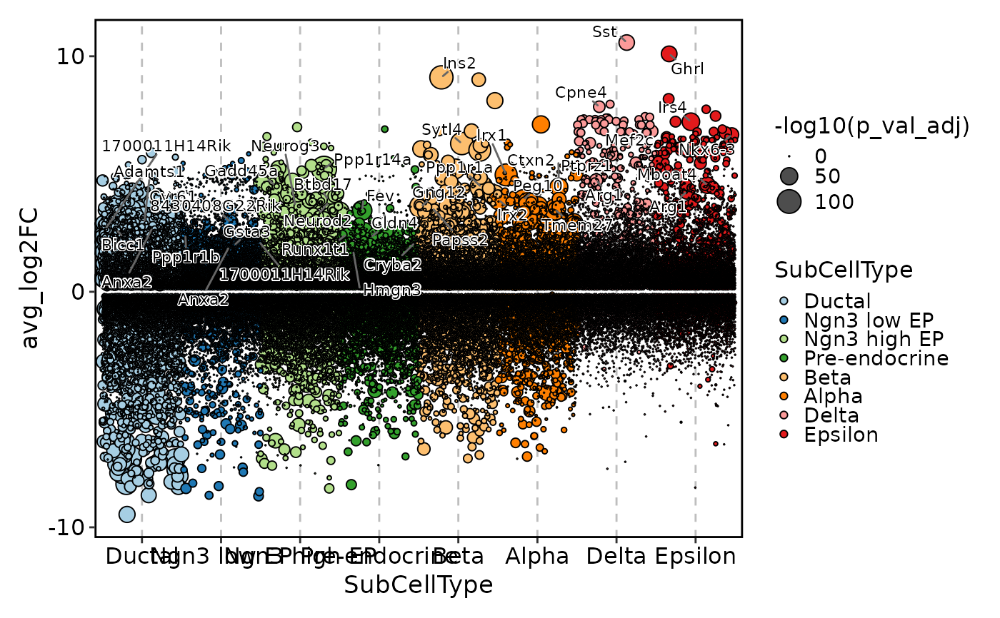
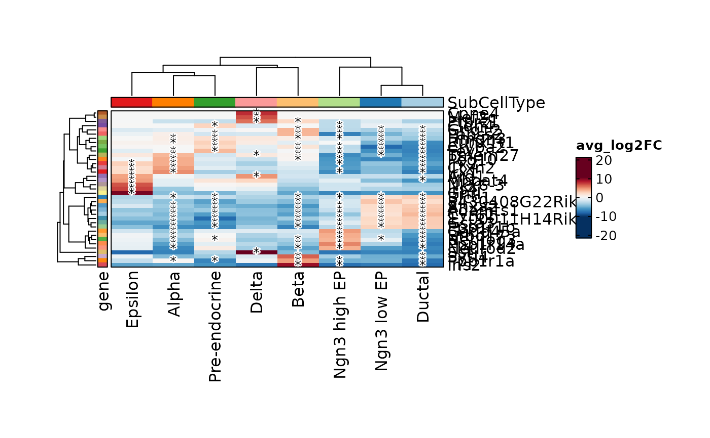
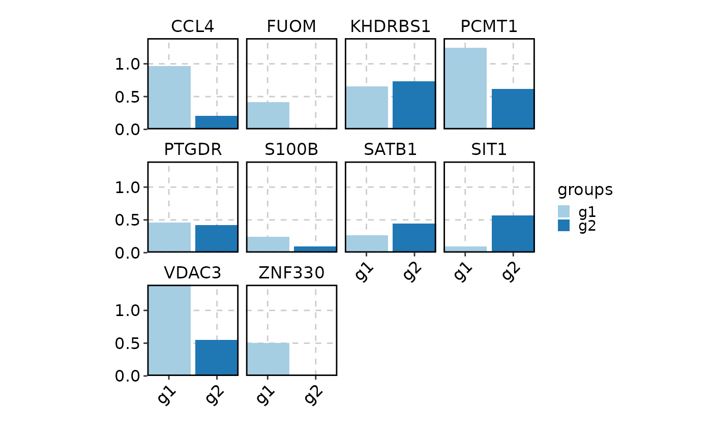
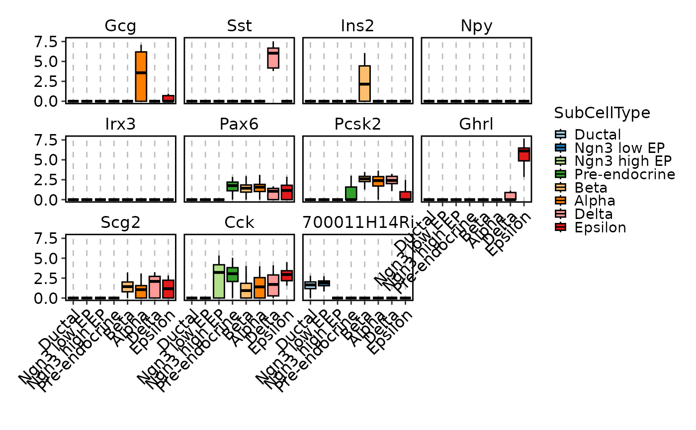
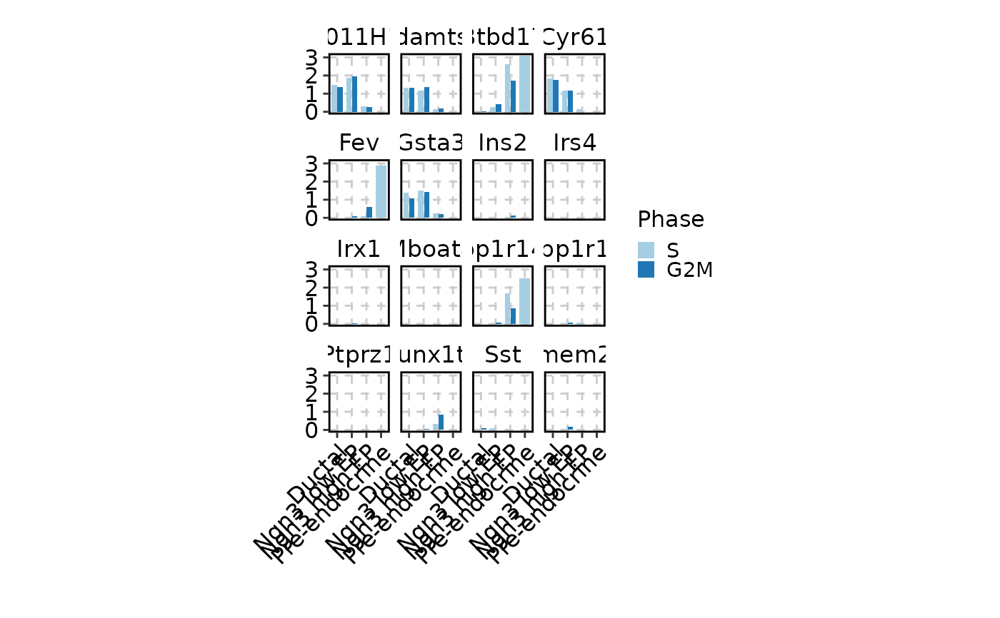

VizDEGs.RdVisualize differentially expressed genes
VizDEGs(
degs,
plot_type = c("volcano_pct", "volcano_log2fc", "violin", "box", "bar", "ridge", "dim",
"heatmap", "dot"),
order_by = "desc(abs(avg_log2FC))",
genes = 10,
outprefix = NULL,
devpars = list(res = 100),
more_formats = c(),
save_code = FALSE,
show_row_names = TRUE,
show_column_names = TRUE,
...
)DEGs from RunSeuratDEAnalysis
Type of plot to generate One of 'volcano_pct', 'volcano_log2fc', 'violin', 'box', 'bar', 'ridge', 'dim', 'heatmap', 'dot'
An expression in string to order the genes
Number of genes genes to visualize (based on the 'order_by' expression) Or an expression in string to filter the genes (passed by dplyr::filter) Only works when plot_type is not a volcano plot
Prefix of the output file
List of parameters to save the plot
Additional formats to save the plot in addition to 'png'
Whether to save the code to reproduce the plot
Whether to show row names in the heatmap
Whether to show column names in the heatmap
Additional arguments to pass to the plot function
For 'volcano_pct' and 'volcano_log2fc', additional arguments to pass to 'scplotter::VolcanoPlot'
For 'violin', 'box', 'bar', 'ridge', 'dim', 'heatmap', 'dot', additional arguments to pass to 'scplotter::FeatureStatPlot'
A ggplot object if 'outprefix' is NULL, otherwise, save the plot to the output directory
# \donttest{
degs <- suppressWarnings(RunSeuratDEAnalysis(SeuratObject::pbmc_small, "groups", "g1", "g2"))
VizDEGs(degs, plot_type = "volcano_pct")

VizDEGs(degs, plot_type = "volcano_log2fc")

VizDEGs(degs, plot_type = "violin")

VizDEGs(degs, plot_type = "box")

VizDEGs(degs, plot_type = "bar")

VizDEGs(degs, plot_type = "ridge")
#> Picking joint bandwidth of 0.598
#> Picking joint bandwidth of 0.474
#> Picking joint bandwidth of 0.698
#> Picking joint bandwidth of 0.747
#> Picking joint bandwidth of 0.605
#> Picking joint bandwidth of 0.371
#> Picking joint bandwidth of 0.557
#> Picking joint bandwidth of 0.493
#> Picking joint bandwidth of 0.778
#> Picking joint bandwidth of 0.532
#> Picking joint bandwidth of 0.598
#> Picking joint bandwidth of 0.474
#> Picking joint bandwidth of 0.698
#> Picking joint bandwidth of 0.747
#> Picking joint bandwidth of 0.605
#> Picking joint bandwidth of 0.371
#> Picking joint bandwidth of 0.557
#> Picking joint bandwidth of 0.493
#> Picking joint bandwidth of 0.778
#> Picking joint bandwidth of 0.532

VizDEGs(degs, plot_type = "dim")

# VizDEGs(degs, plot_type = "heatmap")
# VizDEGs(degs, plot_type = "dot")
# }